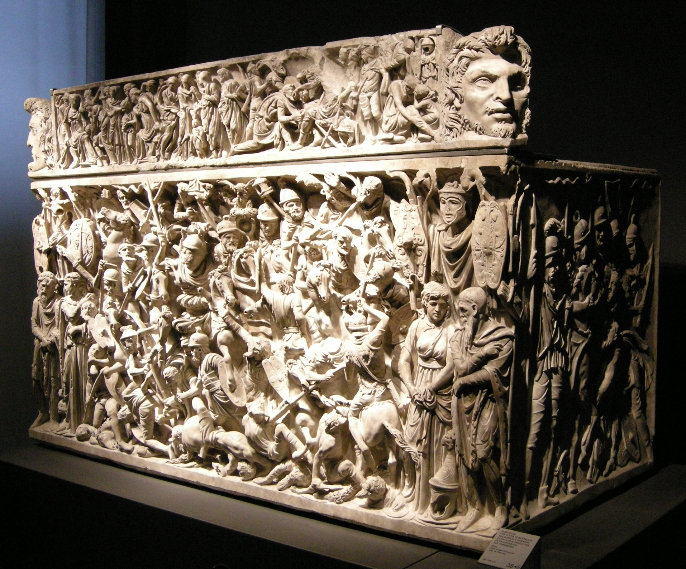
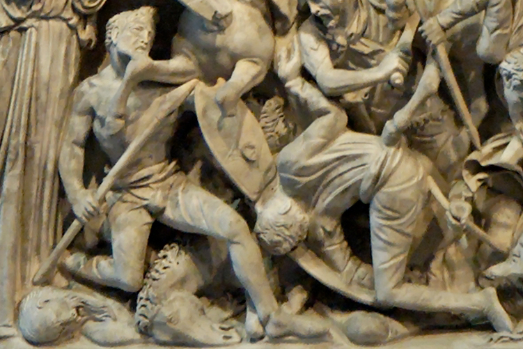

Sarcophagus (sar-KOFF-uh-gus)
A stone coffin, often made for a wealthy person and carved with images that expressed the person’s life, beliefs, or hopes after death.
Artist unknown · Rome, c. 190 C.E. · Marble


The relief is cut very deeply. Figures overlap, twist, and disappear behind one another, while the spaces between them fill with dark shadow. The crowded surface makes battle feel chaotic and close.
A sarcophagus is a stone burial chest. Wealthy Romans often had sarcophagi made with scenes from mythology, daily life, hunting, or war. The Portonaccio Sarcophagus uses a battle scene to honor the man buried inside. We do not know his name, but he was probably an important Roman military leader.
The front does not show a calm, orderly row of soldiers. It is packed with men, horses, shields, weapons, and bodies falling to the ground. The sculptor cut deep spaces between the figures, so light and shadow make the surface feel active. A Roman rider near the center rises above the crowd, helping viewers find the main hero in the confusion.
This is an image of victory, but it also tells us about Roman power. The defeated enemies are shown as crushed, frightened, or dying. The owner’s identity and status were connected to Rome’s success in war. On a tomb, that message makes military achievement part of a person’s memory after death.
A stone coffin, often made for a wealthy person and carved with images that expressed the person’s life, beliefs, or hopes after death.
Sculpture in which figures project far from the background. Deep cuts create strong shadows and make the forms feel almost free of the stone.
The subjects and symbols used in art. Here, battle scenes and victory images connect the dead man to Roman military power.
The Portonaccio Sarcophagus shows how a Roman marble coffin could carry a full visual message about its owner. In the Early Medieval deck, you will meet the Sarcophagus of Junius Bassus. The format remains a large marble burial chest made for a wealthy Roman, but the subject changes: instead of a battle scene, Junius Bassus uses ten scenes from the Bible, framed by columns. Look for what stays Roman—and what becomes Christian.